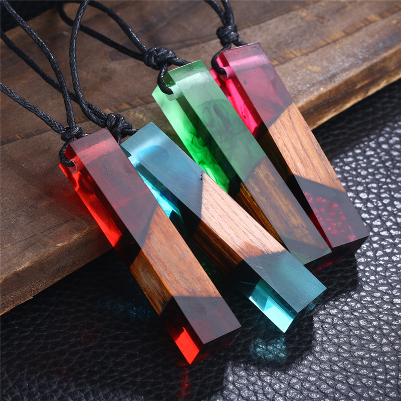

Epoxy resin belongs to the family of two-component resins, which include "resin" and "hardener".
These two components must be mixed in a certain proportion, according to its formulation and application, and
then applied to the desired surface or mold.
The resin base or part A is the basis of our work, which requires the hardening of part B (epoxy hardener). There
are different types of resin bases, most of which are available in the market and are suitable for our work, such as
BISPHENOL A
The most widely used epoxy hardeners are divided into two main groups:
Polyamine hardeners
Polyamid hardeners
In decorative works, a special type of hardener is usually used, which is called "polyamine". Polyamine hardeners
are usually colorless and can be used in bulk. Polyamine hardener is dilute and cannot be added to the solvent
(not soluble).
As I said, these two components must be mixed in a certain proportion, according to the manufacturer's instructions,
and poured into the desired container or mold, so that after a certain period of time, it becomes extremely
difficult to take the shape of the mold.
Another type of hardener called "polyamide" is produced, which has the ability to combine epoxy resin. The polyamide
hardener is reddish-orange in color and has a high error. Polyamide is also soluble, meaning you can add certain
solvents to the polyamide hardener to dilute it. Of course, keep in mind that this type of hardener will not be
suitable for making resin tables, resin jewelry and resin decorative parts, and they are mainly used for epoxy flooring.
As mentioned, polyamide, according to its formulation, has a much higher concentration than polyamine and must be added to
the solvent to be applicable. This solvent added will remain in the system and can make the resin brittle and brittle in
large volumes. On the other hand, the dark color of polyamide does not make it usable in decorative works and is only used
in epoxy flooring as well as a thin layer for primer.
Most of the epoxy resins in the world are in two parts, the resin base and the hardener, which must be combined in a certain
proportion. Of course, single-part and three-part epoxy resins are also produced, which have special uses.
When you go to the market to buy epoxy resin (sellers of chemicals andonline stores), the so-called component A and component
B are called epoxy resins. Although the name only refers to component A, most sellers do not separate the epoxy resin and
the hardener, and simply use the word epoxy or epoxy resin alone, all of which are the same concept. In this article,
wherever you see the word epoxy resin, it means mixing both components A and B, and if there is a need for separation,
I will specify by naming the components.
According to its formulation, epoxy resin dries superficially after a few hours to a day, and it also takes seven days for the
epoxy resin to reach its maximum hardness and for chemical bonds to form between the resin and the hardener. Drying time
and Epoxy cooking time varies depending on the type of resin and hardener.
One of the most widely used fields for using epoxy resin is epoxy flooring, of which I will mention a few examples:
The new field of work with epoxy resin is the construction of tables and decorative objects by combining epoxy resin and wood, which has the
following applications:
